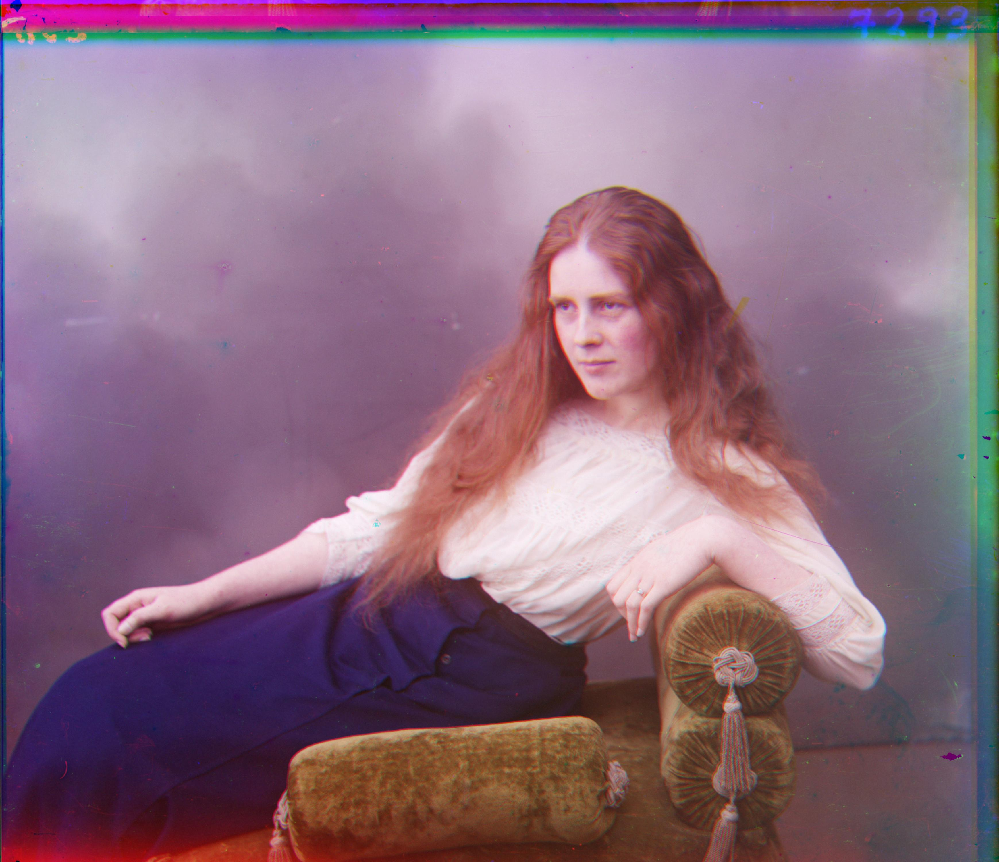

Brief Overview of the Project
The objective of this assignment is to utilize image processing techniques to reconstruct a color image from digitized Prokudin-Gorskii glass plate images while minimizing visual artifacts.
Each glass plate image contains three separate exposures corresponding to the blue, green, and red channels. To create a single RGB image, the three color channel images are separated, stacked,
and then aligned accurately. All image processing functions were implemented from scratch, and several methods were explored to enhance the quality of the final color image.
 Example of the Prokudin-Gorskii glass plate images
Example of the Prokudin-Gorskii glass plate images
Basic Approach
The initial approach involves dividing the glass plate image along the y-axis into three separate color channels: blue, green, and red. The blue channel is considered the reference, and the goal is to align the green and red channels to it. To achieve this, the Normalized Cross-Correlation (NCC) score is employed to compute the optimal (x, y) translation that minimizes the misalignment between channels. To calculate the NCC score, each image is first converted to zero-mean by subtracting its mean. Then, the Frobenius norm is computed to normalize these images to unit length. The NCC score is the dot product of the normalized images, where a higher score indicates better alignment.
The pixel values at the edges of the image are often distorted or contain irrelevant data; therefore, a border of 15 pixels is ignored during the NCC score calculation to avoid any influence from them.
For smaller images (300x300), an exhaustive search method is used to find the optimal alignment. This method searches over a window size of 20 pixels around the initial alignment and calculates the NCC score for each potential translation. This approach takes around ~40s to complete for small images.
 Aligned Color image of Cathedral.jpg
Aligned Color image of Cathedral.jpg
Pyramid Alignment Speed-up
While the basic exhaustive search approach is effective for small images, it becomes impractical for larger images (e.g., 3000x3000 pixels), where the exhaustive method can take approximately 6 minutes. To address this, a pyramid search process is implemented to accelerate the alignment.
The pyramid search approach starts by aligning the image at a coarse level with a reduced resolution, using a larger search window. It then sequentially upsamples the image resolution while decreasing the search window size. At each level of the pyramid, the optimal translation is calculated and accumulated to refine the alignment further. This hierarchical method allows for a more efficient search and significantly reduces the computational time to around 1 minute for larger images.
For the pyramid search apporach used, a total of 4 levels are used with a initalized window size of 5 pixels (finest level) and a window size increment of 5 for each level. The pyramid search approach has significantly improved the alignment process for larger images.
 Aligned Color image usnig pyramid alignment speedup
Aligned Color image usnig pyramid alignment speedup
Automatic Cropping
In some cases, images may have white or black borders that adversely affect the alignment process because these extreme pixel values can skew the NCC calculation, leading to poor alignment. To handle such cases, an automatic cropping function is introduced.
The cropping function calculates average pixel values of the top, bottom, left, and right borders of the image, and determines the crop values based on the threshold of the average pixel values (where average values larger then 0.9 and less than 0.15 indicates white and black borders respectively). Based on a predefined threshold, these border regions are automatically cropped from the three channels before alignment, eliminating their influence on the NCC calculation. This preprocessing step greatly improves alignment results, especially for images with large or irregular borders.
Without Automatic Cropping
G: [57, -6]
R: [111, -17]

With Automatic Cropping
G: [55, 7]
R: [114, 5]
Sobel Edge Detector
Using the raw RGB color channel pixel values to calculate the NCC score for alignment can fail when the channels are imbalanced in terms of light or information captured. For example, in the Emir's image, his blue jacket appears prominently in the blue channel but is much less visible in the green and red channels, leading to misalignment when relying on pixel values alone. To address this, I implemented a Sobel Edge Detector to extract edge features from the image and use them for image alignment. The Sobel Edge Detector is a popular image processing technique used to highlight edges within an image by calculating the gradient magnitude of pixel intensities. It works by applying two convolutional kernels (one for detecting changes in the x-direction and another in the y-direction) to approximate the image's first derivative. This results in an image where edges are highlighted, which is useful for edge detection and feature extraction.
By aligning the images based on their edge features rather than raw pixel values, this approach provides a more consistent alignment for images with uneven color distribution.
Without Edge Detector
G: [49, 24]
R: [19, -645]
With Edge Detector
G: [49, 23]
R: [107, 40]
Results on Example Images
 Cathedral
Cathedral
G: [5, 2]
R: [10, 3]
Monastery
G: [-3, 2]
R: [10, 3]
 Image 3 Description
Image 3 Description
Offset: (x, y)
 Image 4 Description
Image 4 Description
Offset: (x, y)
 Image 5 Description
Image 5 Description
Offset: (x, y)
 Image 6 Description
Image 6 Description
Offset: (x, y)
 Image 7 Description
Image 7 Description
Offset: (x, y)
 Image 8 Description
Image 8 Description
Offset: (x, y)
 Image 9 Description
Image 9 Description
Offset: (x, y)
 Image 10 Description
Image 10 Description
Offset: (x, y)
 Image 11 Description
Image 11 Description
Offset: (x, y)
 Image 12 Description
Image 12 Description
Offset: (x, y)
 Image 13 Description
Image 13 Description
Offset: (x, y)
 Image 14 Description
Image 14 Description
Offset: (x, y)
Results on Selected Images from the Prokudin-Gorskii Collection
Display the results of your algorithm on a few images from the Prokudin-Gorskii collection that you chose to work with.

Offset: (x, y)
Failed Alignments
If your algorithm failed to align any images, provide an explanation of why it happened and possible reasons for the failure.